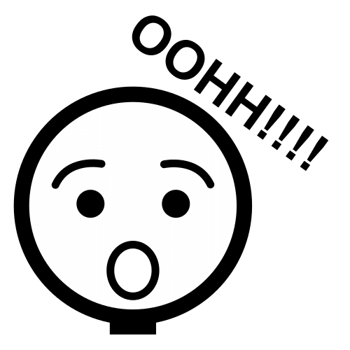
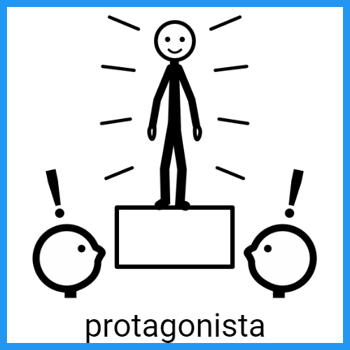

Diccionario
Emoción

Definición:
Alteración del ánimo intensa y pasajera, agradable o penosa, que va acompañada de cierta conmoción somática.
Ejemplo:
Cuando le dieron su regalo no podía evitar la emoción.
Explorar

Definición:
Tratar de descubrir lo que hay en una cosa o lugar.
Ejemplo:
Tenemos que explorar este lugar. Nadie lo ha visitado.
Fascinado

Definición:
Sumamente atractivo.
Ejemplo:
La historia que contaban en el cuento me pareció fascinante. No podía dejar de leerlo.
Párrafo

Definición:
Fragmento de un texto en prosa constituido por un conjunto de líneas seguidas y caracterizado por el punto y aparte al final de la última.
Ejemplo:
En cada párrafo hablamos de distintos temas.
Protagonista

Definición:
Persona que desempeña el papel principal de una obra, literaria o cinematográfica.
Ejemplo:
La protagonista del cuento era una niña que vivía en el bosque con su padre.
Reflejar

Definición:
Imagen.
Ejemplo:
Aquello que reproduce, muestra o pone de manifiesto otra cosa.